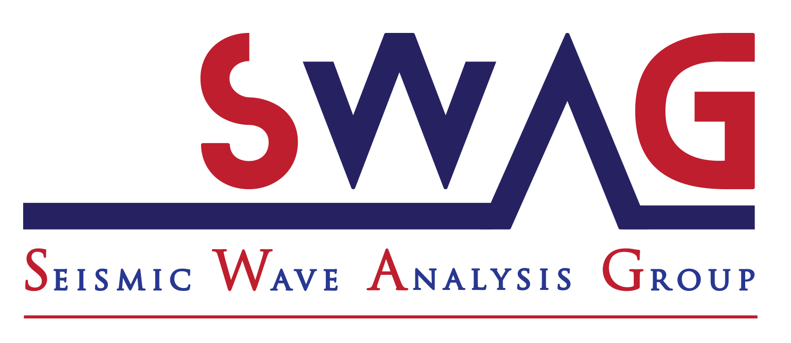
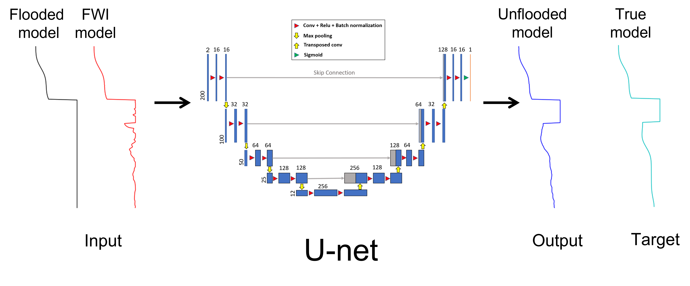

Full-waveform inversion (FWI), a popular technique that promises high-resolution models, has helped in improving the salt definition in inverted velocity models. The success of the inversion relies heavily on having prior knowledge of the salt, and using advanced acquisition technology with long offsets and low frequencies. Salt bodies are often constructed by recursively picking the top and bottom of the salt from seismic images corresponding to tomography models, combined with flooding techniques. The process is time-consuming and highly prone to error, especially in picking the bottom of the salt (BoS). Many studies suggest performing FWI with long offsets and low frequencies after constructing the salt bodies to correct the miss-interpreted boundaries.
Here, we focus on detecting the BoS automatically by utilizing deep learning tools. We specifically generate many random 1D models, containing or free of salt bodies, and calculate the corresponding shot gathers. We then apply FWI starting with salt flooded versions of those models, and the results of the FWI become inputs to the neural network, whereas the corresponding true 1D models are the output. The network is trained in a regression manner to detect the BoS and estimate the subsalt velocity. We analyze three scenarios in creating the training datasets and test their performance on the 2D BP 2004 salt model. We show that when the network succeeds in estimating the subsalt velocity, the requirement of low frequencies and long offsets are somewhat mitigated. We further apply the approach on a vintage field data obtained from the GOM area with challenging acquesition parameters. In general, this work allows us to merge the top-to-bottom approach with FWI, save the BoS picking time, and empower FWI to converge in the absence of low frequencies and long offsets in the data.
Applying FWI to a flooded salt model should reveal some features of the BoS, such as a sharp drop in the velocity at the BoS depth. These features (velocity drops) can be automatically captured using a neural network to unflood the salt at the BoS. If the network is trained in a regression fashion, the network will estimate the subsalt velocity allowing a better inversion in a subsequence FWI. Having a good initial subsalt velocity reduces the requirement of using long offsets and low frequencies. We illustrate this workflow

Training a network requires large and diverse datasets to cover all the possible scenarios in the application. The input to our network is FWI results; thus, we will need many FWI implementations on various plausible models. Therefore, we focus the training on 1D models, where the FWI requires modelling a single shot gather. This should be fine considering that flooding and unflooding are often handled along the vertical dimension. In addition, in 1D models, the gradient can be computed using a few shots by laterally stacking the gradient, which simulates the effect of full fold coverage. We adapt a U-net architecture as our neural network. U-net is commonly used in segmentation tasks and has been widely used for salt detection as a classifier. Normally U-net is applied to two-dimensional (2D) images. Here, we modify the structure to accept one-dimensional (1D) inputs by using 1D convolutional layers instead of 2D layers. The input to the network consists of two channels: the FWI result of the flooded model and the initial flooded model used for the inversion. Including the initial model in the input affects the prediction in areas that do not contain salts by using information from the initial model. The output of the network will be the unflooded model.

We test the proposed method on the left part of the BP 2004 benchmark model and vintage field data from the Gulf of Mexico. Both synthetic and real data miss the low frequencies content and have limited offsets. We perform full-waveform inversion (FWI) with total variation (TV) on a flooded version of the models. As expected, FWI alone could not correct the subsalt velocity. However, we can see the signatures of the BoS.
We ran three experiments on the synthetic BP data. The difference between the three experiments lay in the training datasets. In all the experiments, the network succeeds in unflooding the salt. However, the experiments show that to estimate a good subsalt velocity, the training data has to contain some information about the target model. A final FWI is then applied to the unflooded models. The final FWI shows improvements in the subsalt velocity in the second and the third scenarios, even with the limited offset and the absence of low frequencies. This is courtesy of having good initial models by the network unflooding.
The unflooding for the field GOM data seems to have some artifacts. The black arrows show areas where the network detected what seemed by
the final FWI the actual base, but the network did not unflood at those positions. This could be due to many factors such as inaccuracy of the
top of the salt or hetrogeniouty within the salt, which the network is not learn to deal with. To validate the field results, we apply reverse time migration
on the final inversion result and shows common image angle gathers (CIG) to test. The CIG shows descent flattness at the top and the detected base of the salt.
The data is contaminated with multiples from the salt which is appearant from the image and explain why the CIG shows higher velocity at the deeper parts. Thus,
to better validate this data set, salt multiples should be removed from the data.
| Experiment 1 | The data is created arbitrary with no geological knowledge about the targeted BP model |
| Experiment 2 | Some features are modified to better match the BP model such as the water depth and the maximum velocity of the sediments |
| Experiment 3 | The average velocity of the sediments, excluding the salt, were used as a general trend in creating the training datasets |


If you found the paper useful, please cite it via:
Alali, A., Kazei, V., Kalita, M., & Alkhalifah, T. (2022). Deep learning unflooding for
robust subsalt waveform inversion. Geophysical prospecting.
@article{alali2022deepunflooding,
title={Deep learning unflooding for robust subsalt waveform inversion},
author={Alali, Abdullah and Vladimir, Kazei and Mahesh, Kalita and Alkhalifah, Tariq},
journal={Geophysical prospecting},
volume={},
pages={},
year={2022},
publisher={Wiley}
}